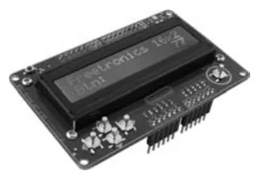
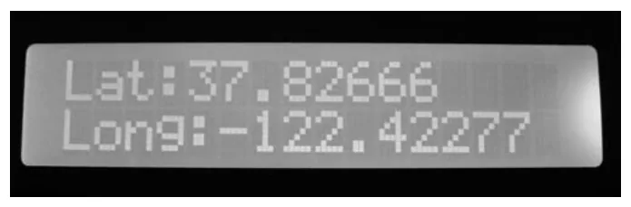
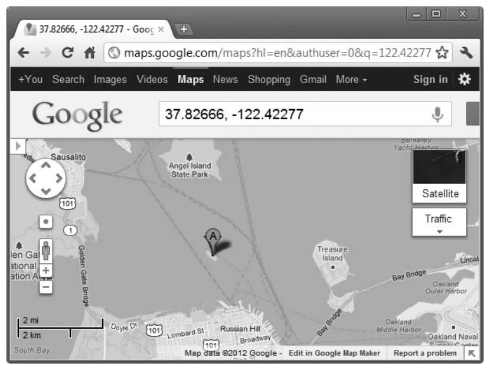

Now let’s create a simple GPS receiver. But first, because you’ll usually use your GPS outdoors—and to make things a little easier—we’ll add an LCD module to display the data, similar to the one shown in Figure 13-6.

To display the current position coordinates received by the GPS on the LCD, we’ll create a very basic portable GPS that could be powered by a 9 V battery and connector.
The Hardware
The required hardware is minimal:
- Arduino and USB cable
- LCD module or Freetronics LCD shield (mentioned earlier)
- One 9 V battery to DC socket cable
- One SparkFun GPS shield kit
The Sketch
Enter and upload the following sketch:
// Project 44 - Creating a Simple GPS Receiver
❶ #include <TinyGPS.h>
#include <LiquidCrystal.h>
LiquidCrystal lcd( 8, 9, 4, 5, 6, 7 );
// Create an instance of the TinyGPS object
TinyGPS gps;
❷ void getgps(TinyGPS &gps);
void setup()
{
Serial.begin(4800);
lcd.begin(16, 2);
}
void getgps(TinyGPS &gps)
// The getgps function will display the required data on the LCD
{
float latitude, longitude;
//decode and display position data
❸ gps.f_get_position(&latitude, &longitude);
lcd.setCursor(0,0);
lcd.print("Lat:");
lcd.print(latitude,5);
lcd.print(" ");
lcd.setCursor(0,1);
lcd.print("Long:");
lcd.print(longitude,5);
lcd.print(" ");
delay(3000); // wait for 3 seconds
lcd.clear();
}
void loop()
{
byte a;
if ( Serial.available() > 0 ) // if there is data coming into the serial line
{
a = Serial.read(); // get the byte of data
if(gps.encode(a)) // if there is valid GPS data...
{
❹ getgps(gps); // grab the data and display it on the LCD
}
}
}From ❶ to ❷, the sketch introduces the required libraries for the LCD and GPS. In void loop at ❹, we send the characters received from the GPS receiver to the function getgps() at ❸, which uses gps.f_get_position() to insert the position values in the byte variables &latitude and &longitude (which we display on the LCD).
Displaying the Position on the LCD
After the sketch has been uploaded and the GPS starts receiving data, your current position in decimal latitude and longitude should be displayed on your LCD, as shown in Figure 13-7.

But where on Earth is this? We can determine exactly where it is by using Google Maps (http://maps.google.com/). On the website, enter the latitude and longitude, separated by a comma and a space, into the search field, and Google Maps will return the location. For example, using the coordinates returned in Figure 13-7 produces a map like the one shown in Figure 13-8.
